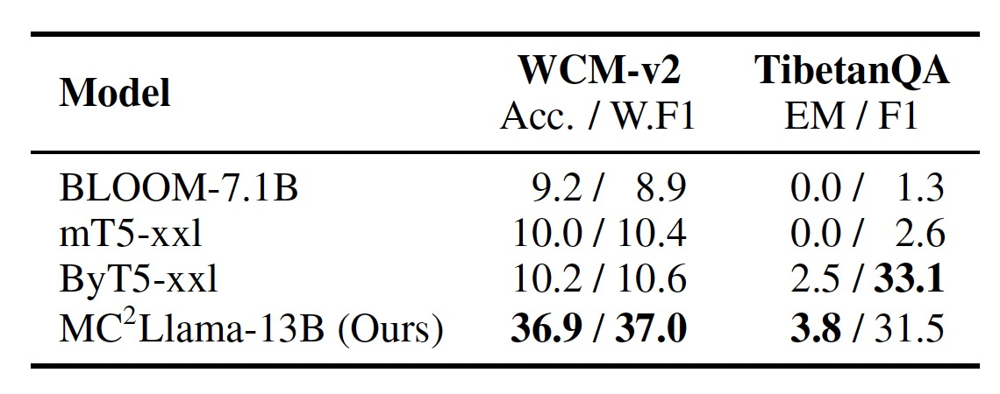

Current large language models demonstrate deficiencies in understanding low-resource languages, particularly the minority languages in China. This limitation stems from the scarcity of available pre-training data.
To address this accessibility gap, we present MC2, a Multilingual Corpus of Minority Languages in China, which is the largest open-source corpus of its kind so far. It emcompasses four underrepresented languages: Tibetan, Uyghur, Kazakh (in the Kazakh Arabic script), and Mongolian (in the tranditional Mongolian script).
When auditing previous multilingual web corpora for low-resource languages, we find critical quality issues. These defects pose a significant threat to effective model training and might undermine the credibility of research findings.
Misidentification of a Kazakh page as Uyghur in CulturaX
Insufficient data cleaning (gray) for a Tibetan web page in CulturaX
We propose a quality-centric solution for data collection of low-resource languages, which aims to ensure accuracy while improving the comprehensiveness and coverage of the data. We hope to establish a reliable groundwork for subsequent language model training or linguistic research.
Our collection procedure of MC2 mainly consists of three steps:
We compare the size of MC2 with other corpora in the table below.
MC2 (crawl) denotes the subset of our newly-collected web crawls. MC2 (full) is the complete set of our corpus, which additionally contains texts collected from existing resources.
†For the Uyghur split of OSCAR and CulturaX, we report the data sizes after manual language re-identification.
Many languages adopt distinct writing systems across various regions. For instance, in China, minority languages such as Kazakh and Mongolian employ scripts that differ from the Cyrillic scripts used in Kazakhstan and Mongolia. Unfortunately, existing datasets predominantly concentrate on the more prevalent writing systems, neglecting the less common ones. In response to this issue, MC2 is the first effort to collect native corpora for the two underrepresented writing systems, i.e., the Kazakh Arabic script and the traditional Mongolian script.
Comparison between the different writing systems of Kazakh (kk) and Mongolian (mn).
The sample texts mean hello. We report the data sizes in CulturaX.
To obtain a model for low-resource scripts, it is intuitive to transliterate the corpus in the high-resource scripts into low-resource ones for training. However, there are no one-to-one conversion rules between scripts for languages such as Mongolian. The transliteration between traditional and Cyrillic Mongolian is context-dependent and current open-source tools are far from perfect. Using noisy data transliterated from high-resource writing systems will greatly hinder the learning of low-resource writing systems.
For some languages such as Kazakh, we can achieve perfect transliteration between different writing systems using pre-defined rules. Nevertheless, there exist disparities in the cultural backgrounds between the language variants using different scripts.
With the technique of probing, we investigate whether the training data collected from different writing systems will lead to distinct cultural knowledge in the resulting models.
We take the Kazakh language as our research target. The Kazakh community in China uses the Arabic script while the Cyrillic script is adopted in Kazakhstan.
We train two distinct Kazakh language models based on XLMRoBERTa-large, each tailored to one of the writing systems. One is trained with 900M authentic Cyrillic Kazakh texts from CulturaX. And the other is trained with an equivalent volume of Arabic Kazakh texts from our MC2 corpus.
We subject the two models trained on different scripts to the cultural probing questions, which reflect the cultural differences between the two Kazakh communities. We query the Arabic Kazakh model with questions written in the Arabic script. Similarly, for the Cyrillic Kazakh model, we use questions written in the Cyrillic script.
As shown in the following examples, the two models exhibit distinct cultural knowledge. The Arabic Kazakh model is more familiar with the Kazakh community in China, while the Cyrillic Kazakh model is more knowledgeable about the Kazakh community in Kazakhstan.
Example 1: Holiday
Example 2: Currency
Example 3: Geography
To demonstrate the practical value of our corpus, we train two models with MC2 and compare their performance with competitive counterparts.
We compare our models with the following baselines:
We mainly test on text classfication (WCM-v2) and question answering (TibetanQA). For decoder-only models, we adopt the zero-shot transfer setting, i.e., fine-tuning on English data and testing on other languages. For other models, we adopt in-context learning.
Performance of different models under the zero-shot transfer setting.
Performance of different models under the in-context learning setting.
The results show that our models achieve competitive performance compared to the baselines. Notably, MC2XLMR-large can exhibit comparable performance to CINO, which is trained on a closed-source corpus three times larger than MC2. The continual pretraining with MC2 is effective in enhancing the model's performance on low-resource languages.
@article{zhang2023mc,
title={MC\^2: Towards Transparent and Culturally-Aware NLP for Minority Languages in China},
author={Zhang, Chen and Tao, Mingxu and Huang, Quzhe and Lin, Jiuheng and Chen, Zhibin and Feng, Yansong},
journal={arXiv preprint arXiv:2311.08348},
year={2024}
}